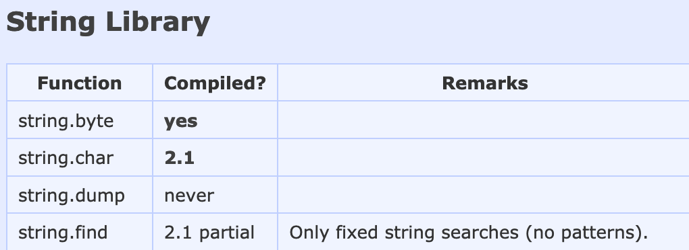

- 00 开篇词 OpenResty，为你打开高性能开发的大门.md.html
- 01 初探OpenResty的三大特性.md.html
- 02 如何写出你的“hello world”？.md.html
- 03 揪出隐藏在背后的那些子项目.md.html
- 04 如何管理第三方包？从包管理工具luarocks和opm说起.md.html
- 05 [视频]opm项目导读.md.html
- 06 OpenResty 中用到的 NGINX 知识.md.html
- 07 带你快速上手 Lua.md.html
- 08 LuaJIT分支和标准Lua有什么不同？.md.html
- 09 为什么 lua-resty-core 性能更高一些？.md.html
- 10 JIT编译器的死穴：为什么要避免使用 NYI ？.md.html
- 11 剖析Lua唯一的数据结构table和metatable特性.md.html
- 12 高手秘诀：识别Lua的独有概念和坑.md.html
- 13 [视频]实战：基于FFI实现的lua-resty-lrucache.md.html
- 14 答疑（一）：Lua 规则和 NGINX 配置文件产生冲突怎么办？.md.html
- 15 OpenResty 和别的开发平台有什么不同？.md.html
- 16 秒杀大多数开发问题的两个利器：文档和测试案例.md.html
- 17 为什么能成为更好的Web服务器？动态处理请求和响应是关键.md.html
- 18 worker间的通信法宝：最重要的数据结构之shared dict.md.html
- 19 OpenResty 的核心和精髓：cosocket.md.html
- 20 超越 Web 服务器：特权进程和定时任务.md.html
- 21 带你玩转时间、正则表达式等常用API.md.html
- 22 [视频]从一个安全漏洞说起，探寻API性能和安全的平衡.md.html
- 23 [视频]导读lua-resty-requests：优秀的lua-resty-_是如何编写的？.md.html
- 24 实战：处理四层流量，实现Memcached Server.md.html
- 25 答疑（二）：特权进程的权限到底是什么？.md.html
- 26 代码贡献者的拦路虎：test__nginx 简介.md.html
- 27 test__nginx 包罗万象的测试方法.md.html
- 28 test__nginx 还可以这样用？.md.html
- 29 最容易失准的性能测试？你需要压测工具界的“悍马”wrk.md.html
- 30 答疑（三）如何搭建测试的网络结构？.md.html
- 31 性能下降10倍的真凶：阻塞函数.md.html
- 32 让人又恨又爱的字符串操作.md.html
- 33 性能提升10倍的秘诀：必须用好 table.md.html
- 34 特别放送：OpenResty编码指南.md.html
- 35 [视频]实际项目中的性能优化：ingress-nginx中的几个PR解读.md.html
- 36 盘点OpenResty的各种调试手段.md.html
- 37 systemtap-toolkit和stapxx：如何用数据搞定“疑难杂症”？.md.html
- 38 [视频]巧用wrk和火焰图，科学定位性能瓶颈.md.html
- 39 高性能的关键：shared dict 缓存和 lru 缓存.md.html
- 40 缓存与风暴并存，谁说缓存风暴不可避免？.md.html
- 41 lua-resty-_ 封装，让你远离多级缓存之痛.md.html
- 42 如何应对突发流量：漏桶和令牌桶的概念.md.html
- 43 灵活实现动态限流限速，其实没有那么难.md.html
- 44 OpenResty 的杀手锏：动态.md.html
- 45 不得不提的能力外延：OpenResty常用的第三方库.md.html
- 46 答疑（四）：共享字典的缓存是必须的吗？.md.html
- 47 微服务API网关搭建三步曲（一）.md.html
- 48 微服务API网关搭建三步曲（二）.md.html
- 49 微服务API网关搭建三步曲（三）.md.html
- 50 答疑（五）：如何在工作中引入 OpenResty？.md.html
- 结束语 行百里者半九十.md.html
- 捐赠
10 JIT编译器的死穴：为什么要避免使用 NYI ？
你好，我是温铭。
上一节，我们一起了解了 LuaJIT 中的 FFI。如果你的项目中只用到了 OpenResty 提供的 API，没有自己调用 C 函数的需求，那么 FFI 对你而言并没有那么重要，你只需要确保开启了 lua-resty-core 即可。
但我们今天要讲的 LuaJIT 中 NYI，却是每一个使用 OpenResty 的工程师都逃避不了的关键问题，它对于性能的影响举足轻重。
你可以很快使用 OpenResty 写出逻辑正确的代码，但不明白 NYI，你就不能写出高效的代码，无法发挥 OpenResty 真正的威力。这两者的性能差距，至少是一个数量级的。
什么是 NYI？
那究竟什么是 NYI 呢？先回顾下我们之前提到过的一个知识点：
LuaJIT 的运行时环境，除了一个汇编实现的 Lua 解释器外，还有一个可以直接生成机器代码的 JIT 编译器。
LuaJIT 中 JIT 编译器的实现还不完善，有一些原语它还无法编译，因为这些原语实现起来比较困难，再加上 LuaJIT 的作者目前处于半退休状态。这些原语包括常见的 pairs() 函数、unpack() 函数、基于 Lua CFunction 实现的 Lua C 模块等。这样一来，当 JIT 编译器在当前代码路径上遇到它不支持的操作时，便会退回到解释器模式。
而JIT 编译器不支持的这些原语，其实就是我们今天要讲的 NYI，全称为Not Yet Implemented。LuaJIT 的官网上有这些 NYI 的完整列表，建议你仔细浏览一遍。当然，目的不是让你背下这个列表的内容，而是让你要在写代码的时候有意识地提醒自己。
下面，我截取了 NYI 列表中 string 库的几个函数：

其中，string.byte 对应的能否被编译的状态是 yes，表明可以被 JIT，你可以放心大胆地在代码中使用。
string.char 对应的编译状态是 2.1，表明从 LuaJIT 2.1开始支持。我们知道，OpenResty 中的 LuaJIT 是基于 LuaJIT 2.1 的，所以你也可以放心使用。
string.dump 对应的编译状态是 never，即不会被 JIT，会退回到解释器模式。目前来看，未来也没有计划支持这个原语。
string.find 对应的编译状态是 2.1 partial，意思是从 LuaJIT 2.1 开始部分支持，后面的备注中写的是 只支持搜索固定的字符串，不支持模式匹配。所以对于固定字符串的查找，你使用 string.find 是可以被 JIT 的。
我们自然应该避免使用 NYI，让更多的代码可以被 JIT 编译，这样性能才能得到保证。但在现实环境中，我们有时候不可避免要用到一些 NYI 函数的功能，这时又该怎么办呢？
NYI 的替代方案
其实，不用担心，大部分 NYI 函数我们都可以敬而远之，通过其他方式来实现它们的功能。接下来，我挑选了几个典型的NYI来讲解，带你了解不同类型的NYI 替代方案。这样，其他的 NYI 你也可以自己触类旁通。
1.string.gsub() 函数
第一个我们来看string.gsub() 函数。它是 Lua 内置的字符串操作函数，作用是做全局的字符串替换，比如下面这个例子：
$ resty -e 'local new = string.gsub("banana", "a", "A"); print(new)'
bAnAnA
这个函数是一个 NYI 原语，无法被 JIT 编译。
我们可以尝试在 OpenResty 自己的 API 中寻找替代函数，但对于大多数人来说，记住所有的 API 和用法是不现实的。所以在平时开发中，我都会打开 lua-nginx-module 的 GitHub 文档页面。
比如，针对刚刚的这个例子，我们可以用 gsub 作为关键字，在文档页面中搜索，这时ngx.re.gsub 就会映入眼帘。
细心的同学可能会问，这里为什么不用之前推荐的 restydoc 工具，来搜索 OpenResty API 呢？你可以尝试下用它来搜索 gsub：
$ restydoc -s gsub
看到了吧，这里并没有返回我们期望的 ngx.re.gsub，而是显示了 Lua 自带的函数。事实上，现阶段而言， restydoc 返回的是唯一的精准匹配的结果，所以它更适合在你明确知道 API 名字的前提下使用。至于模糊的搜索，还是要自己手动在文档中进行。
回到刚刚的搜索结果，我们看到，ngx.re.gsub 的函数定义如下：
newstr, n, err = ngx.re.gsub(subject, regex, replace, options?)
这里，函数参数和返回值的命名都带有具体的含义。其实，在 OpenResty 中，我并不推荐你写很多注释，大多数时候，一个好的命名胜过好几行注释。
对于不熟悉 OpenResty 正则体系的工程师而言，看到最后的变参 options ，你可能会比较困惑。不过，这个变参的解释，并不在此函数中，而是在 ngx.re.match 函数的文档中。
通过查看参数 options 的文档，你会发现，只要我们把它设置为 jo，就开启了PCRE 的 JIT。这样，使用 ngx.re.gsub 的代码，既可以被 LuaJIT 进行 JIT 编译，也可以被 PCRE JIT 进行 JIT 编译。
具体的文档内容，我就不再赘述了。不过这里我想强调一点——在翻看文档时，我们一定要有打破砂锅问到底的精神。OpenResty 的文档其实非常完善，仔细阅读文档，就可以解决你大部分的问题。
2.string.find() 函数
和 string.gsub 不同的是，string.find 在 plain 模式（即固定字符串的查找）下，是可以被JIT 的；而带有正则这种的字符串查找，string.find 并不能被 JIT ，这时就要换用 OpenResty 自己的 API，也就是 ngx.re.find 来完成。
所以，当你在 OpenResty 中做字符串查找时，首先一定要明确区分，你要查找的是固定的字符串，还是正则表达式。如果是前者，就要用 string.find，并且记得把最后的 plain 设置为 true：
string.find("foo bar", "foo", 1, true)
如果是后者，你应该用 OpenResty 自己的 API，并开启 PCRE 的 JIT 选项：
ngx.re.find("foo bar", "^foo", "jo")
其实，这里更适合做一层封装，并把优化选项默认打开，不要让最终的使用者知道这么多细节。这样，对外就是统一的字符串查找函数了。你可以感受到，有时候选择太多、太灵活并不是一件好事。
3.unpack() 函数
第三个我们来看unpack() 函数。unpack() 也是要避免使用的函数，特别是不要在循环体中使用。你可以改用数组的下标去访问，比如下面代码的这个例子：
$ resty -e '
local a = {100, 200, 300, 400}
for i = 1, 2 do
print(unpack(a))
end'
$ resty -e 'local a = {100, 200, 300, 400}
for i = 1, 2 do
print(a[1], a[2], a[3], a[4])
end'
让我们再深究一下 unpack，这次我们可以用restydoc 来搜索一下：
$ restydoc -s unpack
从 unpack 的文档中，你可以看出，unpack (list [, i [, j]]) 和 return list[i], list[i+1], , list[j] 是等价的，你可以把 unpack 看成一个语法糖。这样，你完全可以用数组下标的方式来访问，以免打断 LuaJIT 的 JIT 编译。
4.pairs() 函数
最后我们来看遍历哈希表的 pairs() 函数，它也不能被 JIT 编译。
不过非常遗憾，这个并没有等价的替代方案，你只能尽量避免使用，或者改用数字下标访问的数组，特别是在热代码路径上不要遍历哈希表。这里我解释一下代码热路径，它的意思是，这段代码会被返回执行很多次，比如在一个很大的循环里面。
说完这四个例子，我们来总结一下，要想规避 NYI 原语的使用，你需要注意下面这两点：
- 请优先使用 OpenResty 提供的 API，而不是 Lua 的标准库函数。这里要牢记， Lua 是嵌入式语言，我们实际上是在 OpenResty 中编程，而不是 Lua。
- 如果万不得已要使用 NYI 原语，请一定确保它没有在代码热路径上。
如何检测 NYI？
讲了这么多NYI 的规避方案，都是在教你该怎么做。不过，如果到这里戛然而止，那就不太符合 OpenResty 奉行的一个哲学：
能让机器自动完成的，就不要人工参与。
人不是机器，总会有疏漏，能够自动化地检测代码中使用到的 NYI，才是工程师价值的一个重要体现。
这里我推荐，LuaJIT 自带的 jit.dump 和 jit.v 模块。它们都可以打印出 JIT 编译器工作的过程。前者会输出非常详细的信息，可以用来调试 LuaJIT 本身，你可以参考它的源码来做更深入的了解；后者的输出比较简单，每行对应一个 trace，通常用来检测是否可以被 JIT。
具体应该怎么操作呢？
我们可以先在 init_by_lua 中，添加以下两行代码：
local v = require "jit.v"
v.on("/tmp/jit.log")
然后，运行你自己的压力测试工具，或者跑几百个单元测试集，让 LuaJIT 足够热，触发 JIT 编译。这些都完成后，再来检查 /tmp/jit.log 的结果。
当然，这个方法相对比较繁琐，如果你想要简单验证的话， 使用 resty 就足够了，这个 OpenResty 的 CLI 带有相关选项：
$resty -j v -e 'for i=1, 1000 do
local newstr, n, err = ngx.re.gsub("hello, world", "([a-z])[a-z]+", "[$0,$1]", "i")
end'
[TRACE 1 (command line -e):1 stitch C:107bc91fd]
[TRACE 2 (1/stitch) (command line -e):2 -> 1]
其中，resty 的 -j 就是和 LuaJIT 相关的选项；后面的值为 dump 和 v，就对应着开启 jit.dump 和 jit.v 模式。
在 jit.v 模块的输出中，每一行都是一个成功编译的 trace 对象。刚刚是一个能够被 JIT 的例子，而如果遇到 NYI 原语，输出里面就会指明 NYI，比如下面这个 pairs 的例子：
$resty -j v -e 'local t = {}
for i=1,100 do
t[i] = i
end
for i=1, 1000 do
for j=1,1000 do
for k,v in pairs(t) do
--
end
end
end'
它就不能被 JIT，所以结果里，指明了第 8 行中有 NYI 原语。
[TRACE 1 (command line -e):2 loop]
[TRACE --- (command line -e):7 -- NYI: bytecode 72 at (command line -e):8]
写在最后
这是我们第一次用比较多的篇幅来谈及 OpenResty 的性能问题。看完这些关于 NYI 的优化，不知道你有什么感想呢？可以留言说说你的看法。
最后，给你留一道思考题。在讲 string.find() 函数的替代方案时，我有提到过，那里其实更适合做一层封装，并默认打开优化选项。那么，这个任务就交给你来小试牛刀了。
欢迎在留言区写下你的答案，也欢迎你把这篇文章分享给你的同事、朋友，一起交流，一起进步。
© 2019 - 2023 Liangliang Lee. Powered by gin and hexo-theme-book.